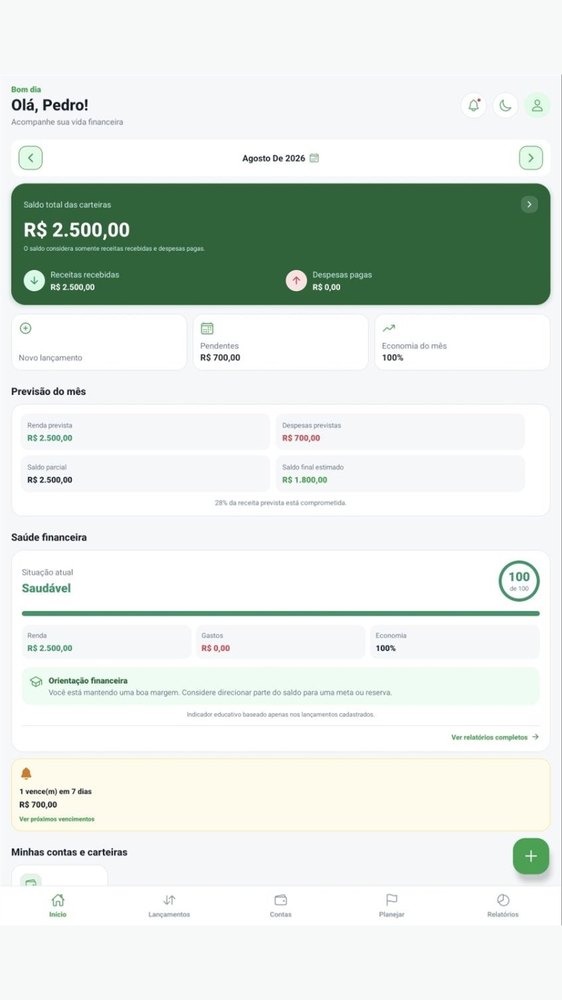
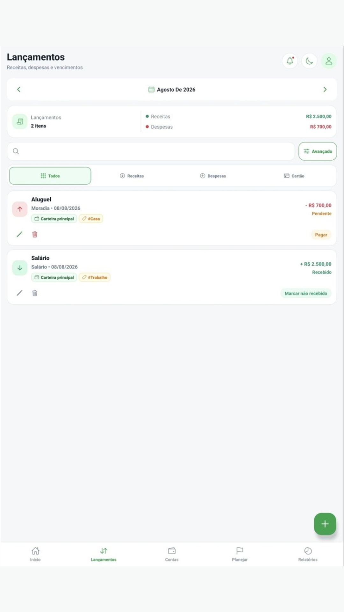
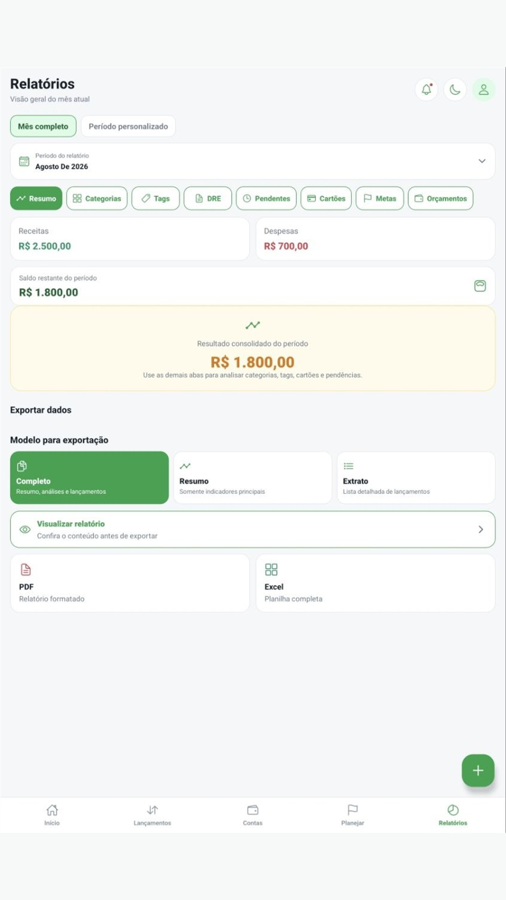
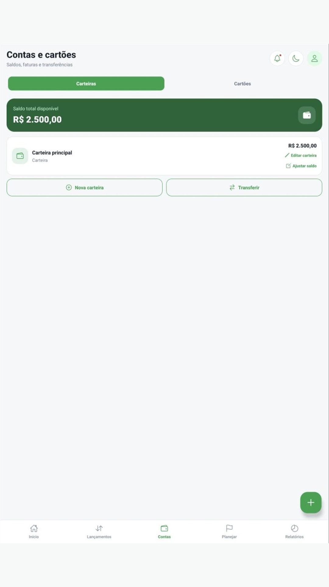
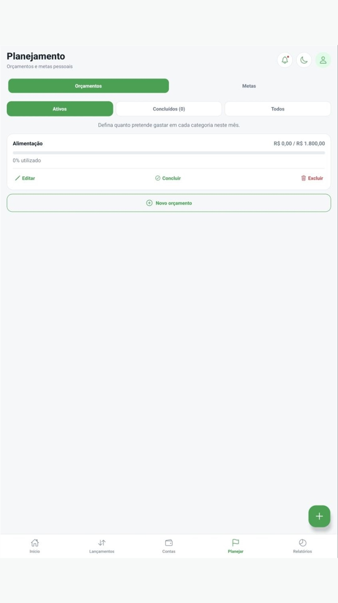

Privacidade por padrãoDados financeiros armazenados localmente
Seu dinheiro, sob seu controle
Organize hoje.
Organize hoje.
Respire melhor amanhã.
Receitas, despesas, cartões, faturas, metas e orçamentos reunidos em um aplicativo simples, privado e feito para a sua rotina.
Em breve na Google Play

✓Dados locaisSuas finanças ficam no aparelho
↗Planeje melhorMetas e orçamentos em um só lugar
Sem conta onlineComece sem cadastro em servidor
Backup protegidoArquivo criptografado sob seu controle
Uma visão completa da sua vida financeira.
Do lançamento rápido ao relatório detalhado, cada recurso ajuda você a entender o que entra, o que sai e o que vem pela frente.
Organização
Registre sem complicação
Cadastre receitas e despesas, marque pagamentos, use categorias e tags e acompanhe todos os lançamentos por período.

Faturas e limites mais claros
Acompanhe despesas por cartão, vencimentos, fechamento da fatura e limite disponível.
Limite disponívelAtualizado após o pagamento
Transforme planos em progresso
Crie metas pessoais e orçamentos mensais para acompanhar prioridades sem perder o contexto.
Progresso visível, decisão mais simples.
04Relatórios
Entenda seus números de verdade
Analise receitas, despesas, categorias, tags, cartões, metas e orçamentos. Exporte relatórios quando precisar.

Veja por dentro
Bonito, direto e feito para usar todos os dias.


PIN local
Biometria
AES-256-GCM
Privacidade de verdade
Suas finanças pertencem a você.
O Meu Financeiro não exige conta online nem envia seus dados financeiros para servidor próprio. O conteúdo fica armazenado no aparelho, protegido por PIN ou biometria, com opção de backup criptografado.
Leia a Política de Privacidade
Quem desenvolve
Meu Financeiro é desenvolvido pela Atende Cloud.
Tecnologia pensada para tornar o controle financeiro pessoal mais claro, seguro e acessível — com atenção aos detalhes e evolução contínua.
suporte@atendecloud.com